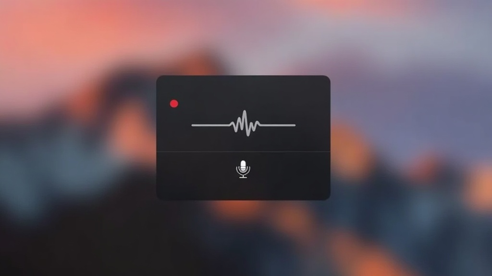
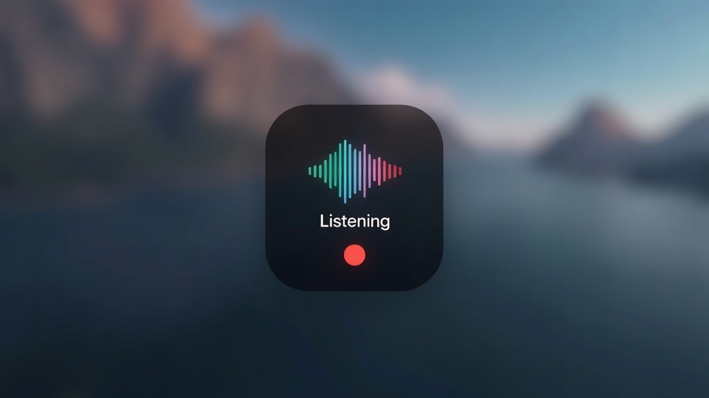
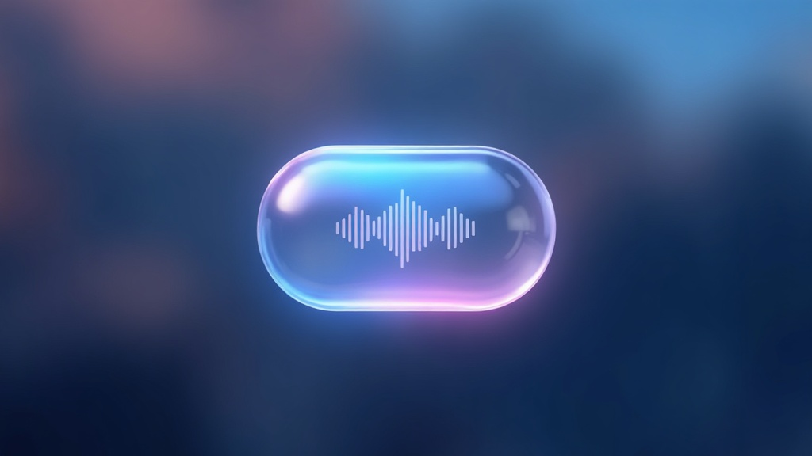
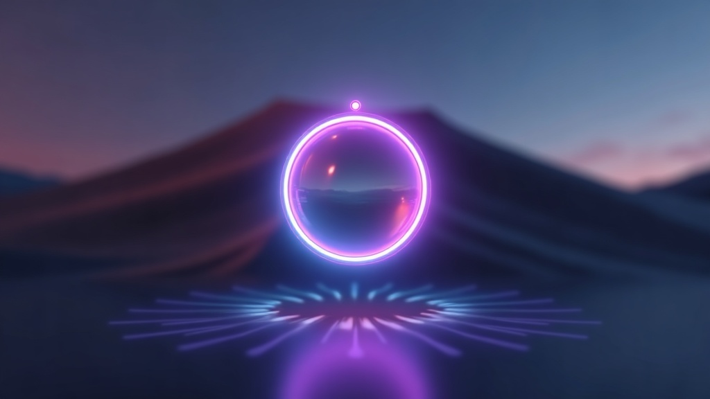
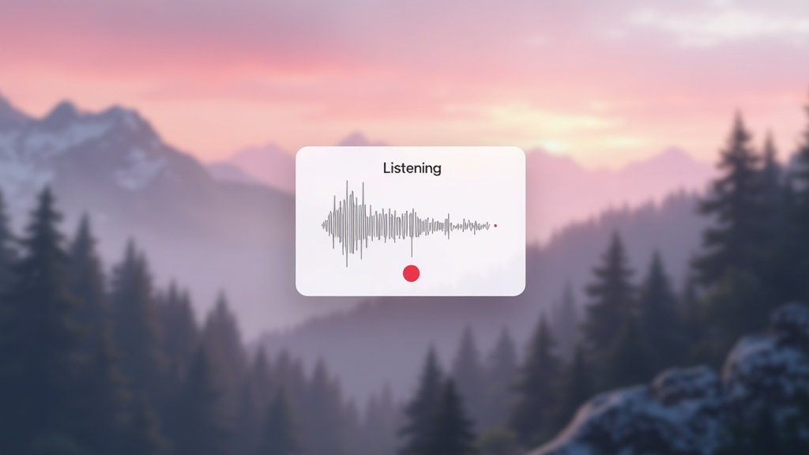
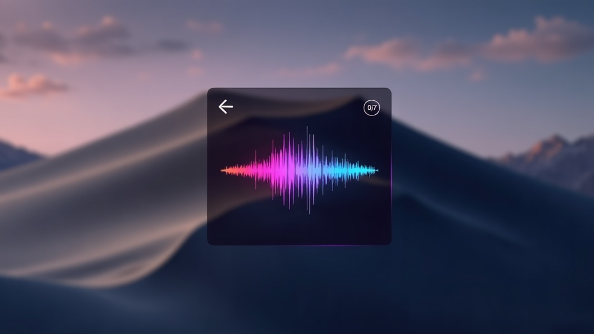

vlow overlay — style exploration (fal.ai flux/dev, 2026-08-14)
Concept art, not pixel specs — each is implementable as a variation of the current NSGlassEffectView pill.

01 · Minimal monoSlim matte capsule, single thin waveform line, tiny red dot, no text. Most restrained; least visual noise while dictating.

02 · Dynamic IslandMatte-black squircle, multicolor gradient bars, label + red dot. Familiar iOS energy; colorful but contained.

03 · Aurora glassIridescent glass bubble with pink/cyan rim glow. Closest evolution of the current liquid-glass pill — add a soft gradient rim.

04 · Neon orbCircular orb with glowing neon ring. Boldest departure; more art object than status widget.

05 · Paper lightLight translucent card, charcoal waveform, red accents. A light-mode alternative; calm and editorial.

06 · Spectrum barsDark glass, per-bar spectrum hues with bloom, small session timer. Current shape, maximal waveform drama.